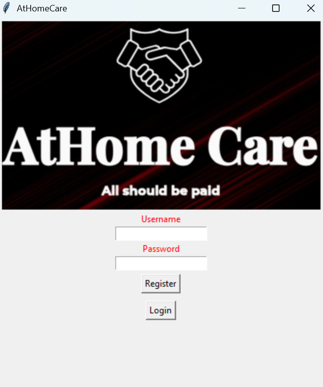
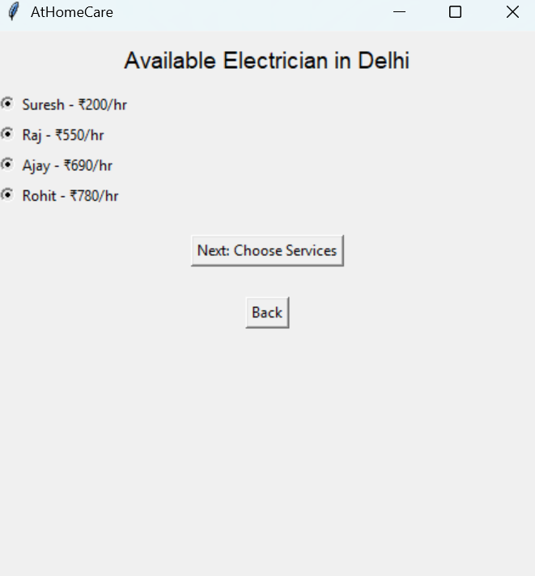

Project I work
AtHome care
- Developed the AtHome Care platform using Python and Tkinter for creating a graphical user interface (GUI) to connect users directly with skilled workers for various home services.
- Objective: Provide an easy-to-use platform for users to access home services like cleaning, repairs, and plumbing, while offering a space for service providers to find work opportunities.
- Key Features:
- Service Listings: Users can view services with details such as descriptions, pricing, and worker ratings.
- Direct Worker Connectivity: The platform allows users to directly contact service providers for inquiries and bookings.

